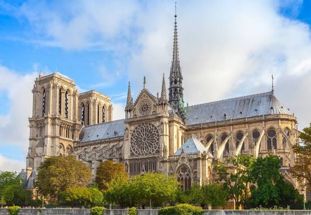

França
Catedral de Notre Dame - Paris
A Catedral de Notre-Dame de Paris é uma das mais antigas catedrais francesas em estilo gótico. Iniciada sua construção no ano de 1163, é dedicada à Virgem Maria e situa-se na Île de la Cité em Paris, rodeada pelas águas do rio Sena.
A catedral surge intimamente ligada à ideia de gótico no seu esplendor, ao efeito claro das necessidades e aspirações da alta sociedade, a uma nova abordagem da catedral como edifício de contacto e ascensão espiritual.
A arquitetura gótica substituiu as paredes grossas das igrejas românicas por colunas altas e arcos capazes de sustentar o peso dos telhados. Como consequência, os edifícios góticos ganharam um aspecto mais leve, e as janelas, mais amplas e altas, foram decoradas com belos vitrais coloridos que filtravam a luz natural, e com isso, criavam um clima de misticismo em seu interior.
Em 15 de abril de 2019 a catedral foi atingida por um violento incêndio causando danos ao teto, pináculo e rosáceas. No dia do acidente, as causas do fogo ainda eram desconhecidas, embora se suspeitasse que tivessem a ver com as obras que estavam em curso.
Museu do Louvre - Paris
Louvre ou Museu do Louvre é o maior museu de arte do mundo e um monumento histórico em Paris, França. Um marco central da cidade, está localizado na margem direita do rio Sena, no 1º arrondissement (distrito) da cidade. Aproximadamente 38 mil objetos, da pré-história ao século XXI, são exibidos em uma área de 72 735 metros quadrados.[1] Em 2019, o Louvre recebeu 9,6 milhões de visitantes, o que o torna o museu mais visitado do mundo.
O museu está instalado no Palácio do Louvre, originalmente construído como o Castelo do Louvre nos séculos XII e XIII durante o reinado de Filipe II. Restos da fortaleza são visíveis no porão do museu. Devido à expansão urbana, a fortaleza acabou perdendo sua função defensiva e, em 1546, Francisco I a converteu na residência principal dos reis franceses.[2] O edifício foi ampliado várias vezes para formar o atual Palácio do Louvre. Em 1682, Luís XIV escolheu o Palácio de Versalhes como sua casa, deixando o Louvre principalmente como um local para exibir a coleção real, incluindo, a partir de 1692, uma coleção de antigas esculturas gregas e romanas.Em 1692, o edifício foi ocupado pela Académie des Inscriptions et Belles-Lettres e pela Académie Royale de Peinture et de Sculpture, que em 1699 realizou o primeiro de uma série de exposições. A Académie permaneceu no Louvre por 100 anos.[4] Durante a Revolução Francesa, a Assembleia Nacional decretou que o Louvre deveria ser usado como museu para exibir as obras-primas do país.
O museu foi inaugurado em 10 de agosto de 1793 com uma exposição de 537 pinturas, a maioria das obras sendo propriedade real e confiscada da Igreja Católica. Devido a problemas estruturais com o edifício, o museu foi fechado em 1796 até 1801. A coleção foi ampliada sob o governo de Napoleão e o museu foi renomeado como Museu Napoleão, mas após a abdicação dele, muitas obras confiscadas por seus exércitos foram devolvidas aos seus proprietários originais. A coleção foi aumentada ainda mais durante os reinados de Luís XVIII e Carlos X e, durante o Segundo Império Francês, o museu ganhou 20 mil peças. O acervo cresceu constantemente através de doações e legados desde a Terceira República. A coleção é dividida em oito departamentos curatoriais: antiguidades egípcias; antiguidades do Oriente Próximo; antiguidades gregas, etruscas e romanas; arte islâmica; esculturas; artes decorativas; pinturas; impressões e desenhos.
Itália
Torre de Pisa - Pisa
A torre inclinada de Pisa, ou simplesmente Torre de Pisa, é um campanário (campanile ou campanário autônomo) da catedral da cidade italiana de Pisa. Está situada atrás da catedral, e é a terceira mais antiga estrutura na praça da Catedral de Pisa (Campo dei Miracoli), depois da catedral e do baptistério.
Embora destinada a ficar na vertical, a torre começou a inclinar-se para sudeste logo após o início da construção, em 1173, devido a uma fundação mal construída e a um solo de fundação mal consolidado, que permitiu à fundação ficar com assentamentos diferenciais. A torre atualmente se inclina para o sudoeste.
A altura do solo ao topo da torre é de 55,86 metros no lado mais baixo e de 56,70 metros na parte mais alta. A espessura das paredes na base é de 4,09 metros e 2,48 metros no topo. Seu peso é estimado em 14 500 toneladas. A torre tem 296 ou 294 degraus: o sétimo andar da face norte das escadas tem dois degraus a menos. Antes do trabalho de restauração realizado entre 1990 e 2001 a torre estava inclinada com um ângulo de 5,5 graus,estando agora a torre inclinada em cerca de 3,99 graus.
Coliseu - Roma
Coliseu, também conhecido como Anfiteatro Flaviano, é um anfiteatro oval localizado no centro da cidade de Roma, capital da Itália. Construído com tijolos revestidos de argamassa e areia, e originalmente cobertos com travertino é o maior anfiteatro já construído e está situado a leste do Fórum Romano.
A construção começou sob o governo do imperador Vespasiano[2] em 72 d.C. e foi concluída em 80 d.C., sob o regime do seu sucessor e herdeiro, Tito. Outras modificações foram feitas durante o reinado de Domiciano (81-96). Estes três imperadores são conhecidos como a dinastia flaviana e o anfiteatro foi nomeado em latim desta maneira por sua associação com o nome da família (Flavius).
O Coliseu poderia abrigar, estima-se, entre 50 mil e 80 mil espectadores, com uma audiência média de cerca de 65 mil pessoas. O edifício era usado para combates de gladiadores e espetáculos públicos, tais como simulações de batalhas marítimas (em um curto período de tempo como o hipogeu era inundado através de mecanismos de apoio), caças de animais selvagens, execuções, encenações de batalhas famosas e dramas baseados na mitologia clássica. O prédio deixou de ser usado para entretenimento na era medieval. Mais tarde foi reutilizado para vários fins, tais como habitação, oficinas, sede de uma ordem religiosa, uma fortaleza, uma pedreira e um santuário cristão. Em 2007, o monumento foi eleito informalmente como uma das sete maravilhas do mundo moderno.
Embora parcialmente arruinado por causa de danos causados por terremotos e saques, o Coliseu é ainda um símbolo da Roma Imperial. É uma das atrações turísticas mais populares da capital italiana e tem também conexões com a Igreja Católica Romana, pois a cada Sexta-feira Santa, o Papa guia a Via Crúcis que começa na área em torno do Coliseu. O Coliseu também é retratado na versão italiana da moeda de 5 cêntimos de euro.
Portugal
Cabo da Roca - Lisboa
O Cabo da Roca é o ponto mais ocidental de Portugal Continental e da Europa continental. Situa-se na freguesia de Colares, concelho de Sintra e distrito de Lisboa. As suas coordenadas geográficas são N 38º46'51", W 9º30'2".
O local é visitável, não até ao extremo mas até uma zona à altitude de 140 m. O cabo forma o extremo ocidental da Serra de Sintra, precipitando-se sobre o Oceano Atlântico.
Luís Vaz de Camões descreveu-o como o local “Onde a terra se acaba e o mar começa” (in Os Lusíadas, Canto III). Um padrão em pedra com uma lápide assinalam esta particularidade geográfica a todos quanto visitam este local. A sua flora é diversa e, em muitos casos, tem espécies únicas, sendo objecto de vários estudos que se estendem, igualmente, à geomorfologia, entre outros. Na zona existe um farol (Farol do Cabo da Roca) e uma loja turística. Está inserido no Parque Natural de Sintra-Cascais, numa zona de fáceis acessos e de grande afluência turística, sendo muitas as pessoas que o visitam.p>Ao domingo é habitual a concentração de vários grupos de motociclistas.
Torre de Belém - Lisboa

A harmonia e os delicados ornamentos da Torre de Belém sugerem, aos olhos de quem a vê, uma jóia trabalhada. Porém, a visão dos contemporâneos da sua construção era outra: um formidável e temível baluarte de defesa da entrada do rio, cruzando fogo com a torre fronteira de São Sebastião, na outra margem. Encomendada por D. Manuel I (1495-1521), foi construída por Francisco de Arruda, entre 1514 e 1521, sobre um ilhéu de basalto que se localizava próximo da margem direita do Tejo, frente à praia do Restelo. No entanto, com o deslocamento progressivo do curso do rio ao longo dos anos, a Torre acabou por ficar praticamente "amarrada" à margem.
É composta por uma torre quadrangular que lembra os castelos medievais e por um baluarte poligonal, elemento de defesa destinado a sustentar artilharia pesada, com bombardeiras rasantes ao mar. As guaritas com cúpulas de gomos, que se erguem a cada canto, denotam a influência das fortificações marroquinas. A par destes elementos orientalistas, predomina a decoração manuelina no cordame de pedra que a envolve, nos motivos heráldicos e até no famoso rinoceronte, primeira representação em pedra deste animal na Europa. A face mais decorativa da Torre é a que está virada a sul, onde corre o varandim. Sobre o muro do claustrim que se ergue em cima do baluarte, destaca-se uma imagem esculpida da Virgem com o Menino do séc. XVIII, "à proa" da torre.
O interior merece a visita pela subida ao último piso, onde o esforço é recompensado pela admirável vista sobre o largo estuário do rio Tejo e a parte ocidental da cidade de Lisboa, tão evocativos da história de Portugal durante a Era dos Descobrimentos.
Em 1983, a Torre de Belém foi classificada Património da Humanidade pela UNESCO